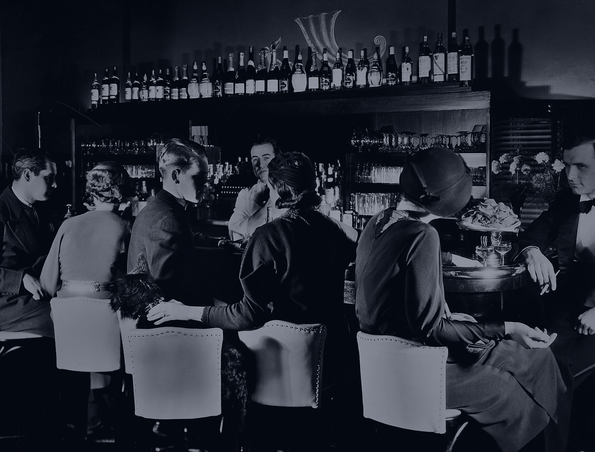
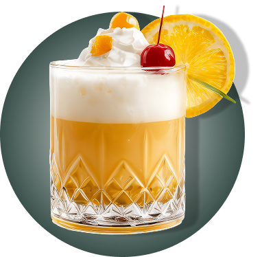
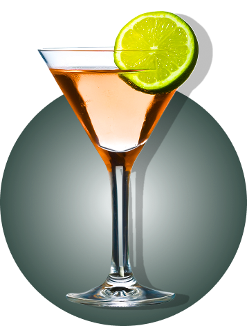
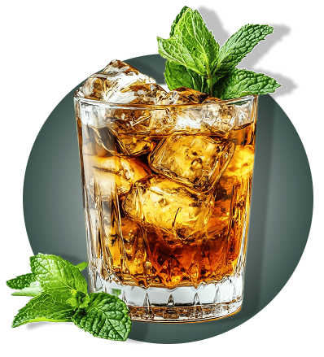
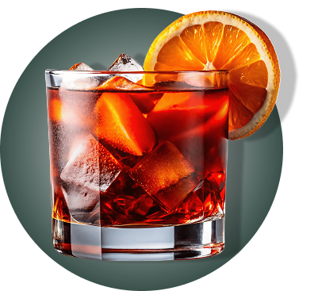
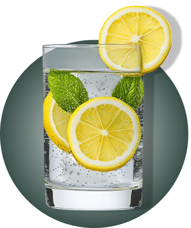
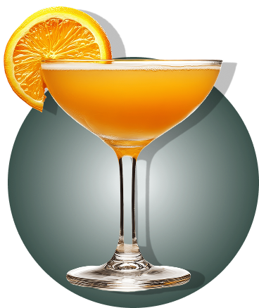

CLASSIC COCKTAILS






Дайкири

Хотя импорт алкоголя и был под запретом, черный рынок процветал. Мелассу, которая используется для производства, ввозить было проще и дешевле, чем готовый продукт.
О выдержке говорить не приходилось: ром получался откровенно гадкий. Одним из способов все исправить был Дайкири.
А уже в середине века Хемингуэй наслаждался коктейлем в барах Кубы.
Ингредиенты

- Белый ром - 60мл
- Сахарный сироп - 15мл
- Лаймовый сок - 30мл
- Лед в кубиках - 200г
- Налей в шейкер лаймовый сок 30 мл, сахарный сироп 15 мл и белый ром 60 мл
- Наполни шейкер кубиками льда и взбей
- Перелей через стрейнер в охлажденное шампанское блюдце
Сайдкар

Виноградный сок и виноград были в свободном доступе, что позволяло бутлегерам использовать их для производства коньячного дистиллята.
Напиток не отличался изысканностью, но бармены пользовались новым для того времени рецептом коктейля Сайдкар, чтобы улучшить вкус напитка.
Бары, которые могли позволить себе контрабандный алкоголь, использовали коньяк или бренди.
Ингредиенты

- Коньяк Hennessy - 45мл
- Трипл сек - 30мл
- Сахарный сироп - 5мл
- Лимонный сок - 20мл
- Сахарный сироп - 5мл
- Лед в кубиках - 200г
- Сделай на коктейльном бокале сахарную окаемку
- Налей в шейкер лимонный cок 20 мл, воду без газа 15 мл и сахарный сироп 5 мл
- Добавь ликер трипл сек 30 мл и коньяк 45 мл
- Наполни шейкер кубиками льда и взбей
- Перелей через стрейнер в охлажденный коктейльный бокал
Том коллинз

Идеальная замена джин-тоника, цитрусовый и освежающий Том Коллинз.
Простой в приготовлении, этот коктейль легко маскировал вкус джина лимонным соком и был популярен среди любителей джина того времени.
Ингредиенты

- Лондонский сухой джин - 50мл
- Сахарный сироп - 25мл
- Лимонный сок - 25мл
- Содовая- 100мл
- Апельсин - 30мл
- Лед в кубиках - 380г
- Наполни коллинз кубиками льда доверху
- Налей в шейкер лимонный сок 25 мл, сахарный сироп 25 мл и джин 50 мл
- Наполни шейкер кубиками льда и взбей
- Перелей через стрейнер в бокал
- Долей содовую доверху и аккуратно размешай коктейльной ложкой
- Укрась кружком апельсина
Виски Сауэр

Сауэры — один из старейших видов коктейлей.
В 1920-х годах виски сауэр, благодаря добавлению лимонного сока, сахарного сиропа и яичного белка, помогал скрыть неприятный вкус низкокачественного виски.
Именно это способствовало его популярности.
Ингредиенты

- Бурбон - 50мл
- Сахарный сироп - 15мл
- Ангостура биттер - 1мл
- Лаймовый сок - 30мл
- Белок перепелиного яйца - 25мл
- Коктейльная вишня - 5г
- Лед в кубиках - 320г
- Наполни рокс кубиками льда
- Налей в шейкер белок перепелиного яйца 25 мл, лимонный сок 30 мл, сахарный сироп 15 мл и бурбон 50 мл
- Добавь ангостуру биттер 1 дэш
- Тщательно взбей безо льда
- Наполни шейкер кубиками льда и взбей еще раз
- Перелей через стрейнер в рокс
- Укрась коктейльной вишней на шпажке
Мятный Джулеп

Главным героем среди алкогольных напитков был бурбон. Доступное сырье, понятный процесс производства и высокий спрос сделали бурбон самым популярным и дорогим алкоголем того времени.
Мятный джулеп ассоциировался с изысканностью и богатством. В поп-культуре его часто изображают как напиток, подаваемый на званых вечерах и в высших кругах общества.
Ингредиенты

- Бурбон - 50мл
- Вода без газа - 10мл
- Мята - 3г
- Сахарная пудра - 10г
- Дробленый лед - 150г
- Положи в медную кружку мяту 10 листиков и сахарную пудру 2 к. ложки
- Налей воду без газа 10 мл и слегка придави мадлером
- Наполни кружку дробленым льдом доверху
- Налей выдержанный бурбон 50 мл и аккуратно размешай коктейльной ложкой
- Досыпь немного дробленого льда
- Укрась веточкой мяты
Манхэттен

Спустя 5 лет после принятия закона в Нью-Йорке была организована сеть подпольных заведений. Всего в городе насчитывалось от 30 до 100 тысяч спикизи баров.
Коктейль Манхэттен занял свое место в меню не только из-за своего названия. Гармоничное сочетание терпкого виски со сладостью красного вермута захватывало внимание гурманов.История: Мохито родом из Кубы...
Ингредиенты

- Бурбон - 50мл
- Красный вермут - 25мл
- Ангостура биттер - 1мл
- Коктейльная вишня - 5г
- Лел в кубиках - 300г
- Налей в стакан для смешивания красный вермут 25 мл и бурбон 50 мл
- Добавь ангостуру биттер 1 дэш
- Наполни стакан кубиками льда и размешай коктейльной ложкой
- Перелей через стрейнер в охлажденный коктейльный бокал
- Укрась коктейльной вишней на шпажке